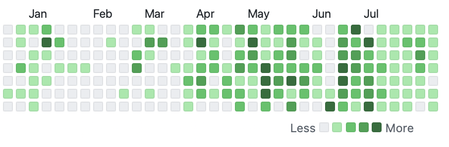

정말 오랜만에 올리는 포스팅과 그간의 일상들
거의 그 누구도 보지 않을거 같지만 그래도 항상 기록 할려 했던 나의 생각들

정말 너무나도 오랜만에 돌아왔다. 적을 내용이 없었던 건 아니다. 충분히 있었고 대학교에 들어오면서 공부하느랴, 노느랴 등 개인적으로 시간을 할애 하는데 많이 쓴거 같다. 솔직하게 말하면 그냥 귀찮았다. 블로그를 시작한 이유에 대해서 작성을 하자면 테크, IT 등에 대한 뉴스들을 이렇게 나마 내가 적고 정리를 하면서 나의 지식의 폭을 늘려가고 싶었던 맘이 있다. 허나 쉽지 않았고 더군다나 지금은 연구생의 인생을 살아가고 있다.
그렇다고 해서 펑펑 놀았냐? 절대 아니라고 당당히 말할 수 있을거 같다.
올해 작성하는 날 까지의 나의 Commit 이다. 절대 쉬지 않았다는걸 보여주고 싶었다. 왜 그랬냐?
일단 중학교, 고등학교 시절에 너무 공부를 안했다. 여기서 말하는 공부라 함은 흔히 우리가 말하는 입시를 위한 공부. 국, 영, 수, 사, 탐 등 교과 성적이 나락 그 자체 까지 가고 심리적으로도 굉장히 힘들었고 그 과정을 거치면서 아무것도 한게 없다고 해도 무관할 정도이다. 그런 나의 깊고 어두운 역사를 쓰고 나니 지금부터라도 내가 좋아하는 학문을 공부하기 위해 왔으니 해보자라는 마인드로 죽어라 달리고 있다. 물론 힘들다. 힘들어서 술 없이는 자살 행위나 마찬가지 일 정도이다. 목표가 있기에 가능하지 않을까 싶다.
목표라 함에는 사실 목적지가 있지는 않다. 단지 목표라는 '무언가' 가 존재하는 것이고 일단 뛰어보고 달려가서 잡아볼려고는 하는 것 뿐이다. 대단한 사람이 되고 싶지도 위대한 사람이 되고 싶지도 않다. 일단 뭔지 몰라도 그 끝에는 행복이라는게 있지 않을까 기대하는 것 뿐이다.
현재는 한림대학교 인공지능융합학부 소속 재학생이며, HeathCare Information 연구실에서 공부하고 있다. 직책은 따로 없지만 아마 서류상에는 학부연구생으로 등록이 되어 있을 것이다. 올해 (2022년) 3월에 들어가 (명확히는 아마 2번째 주 토요일인가 그랬을 것이다.) 지금까지 쭉 있다. 이 연구실에서 공부하고 배운 것이 굉장히 많다.
나의 프로그래밍 시작이 사실 인공지능과는 꽤나 거리가 있고 학기 초 까지만 해도 그래해왔다. 허나 이번 연구실에 들어오면서 굉장히 많은 부분에 도움을 얻었고 공부하는데에도 큰 추진력이 되어 왔다. 더불어 연구실 활동을 하다보면 꽤 오래된 코드들을 다루게 된다. 아무래도 의료 쪽은 한번 구체화가 되고 공개가 된 데이터는 몇번이고 계속 우려 먹게 된다. 아무래도 오래된 데이터가 공개가 되면 그에 맞는 프로그램 혹은 코드 또한 오래 되어 현대 컴퓨터와는 잘 맞지 않을 수 있기 때문이다. 그런 사례로 wfdb이 그래 왔는데 사용한지 꽤 오래 되어서 그런지 url update가 되지 않아 pull request 를 통해 공인으로 수정 되어 있다. 그 밖에도 되게 많은 Contribtuion을 해왔고 정말 올해는 깃허브에서 나의 모든 기록을 실었다고 해도 과언이 아니다.

Tom Sachs 전시회를 다녀오고 아날로그의 무언가에 심취했다. 아날로그 적인 아트웤, 촬영물, 기록물, 행동 등 21세기에서 22세기 그 어딘가에 있는 우리는 '디지털' 이라는 단어 안에서 계속 만들어가고 있다. 나 또한 그렇다. 지금도 이렇게 작성하고 있는 '무언가' 는 디지털로 되어 있고 아날로그로 변형하면 HTML 코드 그 자체가 될 것이다. Tom Sacsh의 작품을 보면서 알수 없는 유대감 혹은 공감을 갖게 되어 나도 아트적인 무언가를 하고 싶다는 열망이 계속 생겨난다. 할 수 있을려나 모르겠다.
지난주 8월 6일 (아니면 7일) 코로나 양성 판정을 받고 7일간의 격리 기간을 겪었다. 그 기간 동안 침대에서 뒹굴면서 단지 시간을 버리진 않았다. 책을 읽기 시작했다. 과거에 읽던 [코스모스]를 시작으로, [니체의 말], [칵테일, 러브, 좀비], [재와 물거품]를 읽었다. 그리고 이번에는 [프로젝트 헤일메리] 라는 책을 읽는데 꽤나 재밌다. 이 얘기를 왜 하냐면 앞으로 이 블로그를 아마 독서 감상문 처럼 쓸거 같다. 당연히 테크 블로그라고 명시를 해두었지만 그래도 자기 계발 이라는 타이틀 안에서는 모든게 허용되지 않나 싶다.
여러므로 오랜만에 적어보는 김에 이런저런 말들을 해보았다. 큰 의미 없는 말들이 수두룩 하지만 그래도 기록에 의미를 두자.